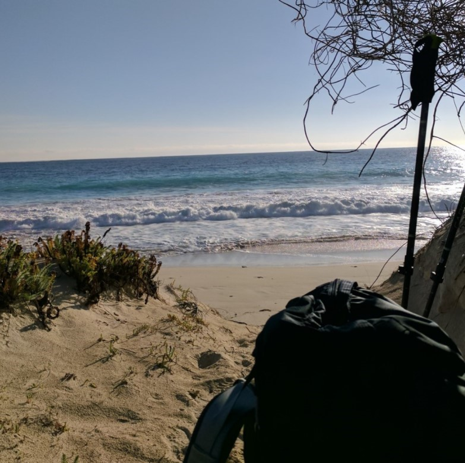

“He felt that his whole life was some kind of dream and he sometimes wondered whose it was and whether they were enjoying it.” ― Douglas Adams
Alexander Florian-Prescott
Web Developer
Hello and welcome to my page! I am a full-Stack web developer with a focus on JavaScript and Node.js development. I have worked extensively within the React.js framework, and am also familiar with numerous other view engines, libraries, databases, and tools which help me deliver elegant and responsive web applications.
If you have any questions or comments, please feel free to contact me! My information can be found on the right panel.
——— Skills ———
Training
Completed the 2017-2018 Trilogy Coding Bootcamp at UNC
Self-taught understanding of numerous additional tools and libraries.
Languages and Frameworks
- JavaScript
- Node.js
- HTML5
- CSS3
- Git
- SQL
- NoSQL
- React.js
Libraries and Tools
Note that this is not an exhaustive list as I have familiarity with many more, though I may have not made use of them recently
- MySQL
- PostgreSQL
- MongoDB
- JQuery
- Redux
- styled-components
- Greensock
- Bootstrap
——— About Me ———
First Para
Second Para
